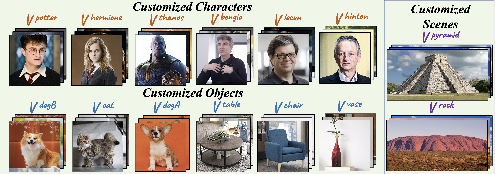

Decentralized Multi-Concept Customization by Mix-of-Show
For example, we extend following 14 customized concepts to the pretrained model. 👇 👇 👇

Abstract
Public large-scale text-to-image diffusion models, such as Stable Diffusion, have gained significant attention from the community. These models can be easily customized for new concepts using low-rank adaptations (LoRAs). However, the utilization of multiple concept LoRAs to jointly support multiple customized concepts presents a challenge. We refer to this scenario as decentralized multi- concept customization, which involves single-client concept tuning and center-node concept fusion. In this paper, we propose a new framework called Mix-of-Show that addresses the challenges of decentralized multi-concept customization, including concept conflicts resulting from existing single-client LoRA tuning and identity loss during model fusion. Mix-of-Show adopts an embedding-decomposed LoRA (ED-LoRA) for single-client tuning and gradient fusion for the center node to preserve the in-domain essence of single concepts and support theoretically limitless concept fusion. Additionally, we introduce regionally controllable sampling, which extends spatially controllable sampling (e.g., ControlNet and T2I-Adaptor) to address attribute binding and missing object problems in multi-concept sampling. Extensive experiments demonstrate that Mix-of-Show is capable of composing multiple customized concepts with high fidelity, including characters, objects, and scenes.
Main Observation
Method Overview - (tune&fuse)
In single-client concept tuning, Mix-of-Show (ED-LoRA) extends the embedding expressiveness, and tackle the embedding-LoRA
co-adaptation issue. ED-LoRA preserves more in-domain essence of given concept in embedding and reduce concept conflict.
In center-node concept fusion, Mix-of-Show (gradient fusion) can fuse multiple concept ED-LoRAs and align its single-concept inference
behavior, without accessing to the training data.
Gradient fusion tackles the identity loss of weight fusion in previous LoRA merge.
Method Overview - (sample)
For complex compositions, stable diffusion models often encounter challenges such as missing object and attribute binding. To address this, we introduce regionally controllable sampling, which builds upon spatial controllable sampling (e.g., ControlNet and T2i-Adaptor). This approach allows us to assign region prompts and attributes by rewriting features in the cross-attention mechanism. By leveraging regionally controllable sampling in conjunction with our Mix-of-Show framework, we can achieve complex compositions using multiple customized concepts.
Result Summarization


Multi-Concept Sampling (semantically-distinct subjects, without spatial condition)

Multi-Concept Sampling (complex composition, with spatial condition)

Bibtex